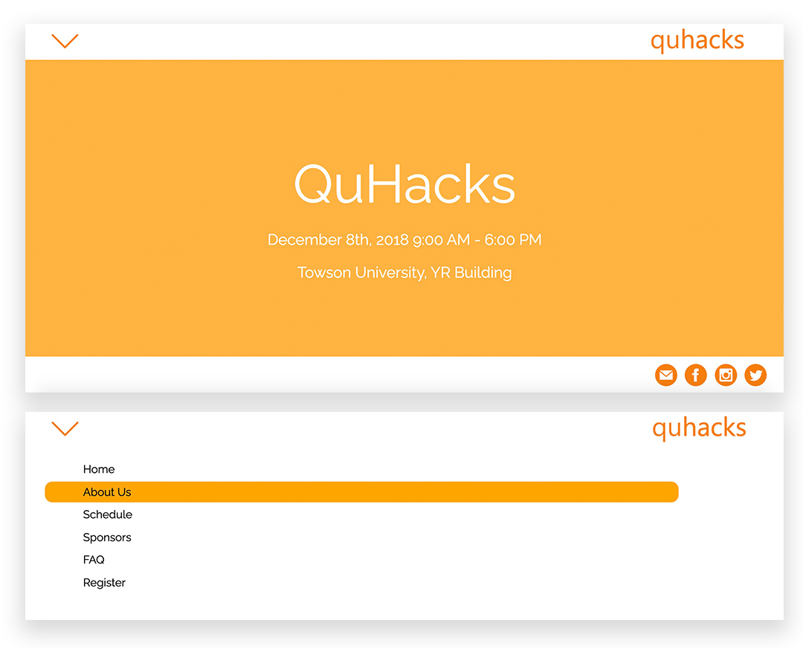
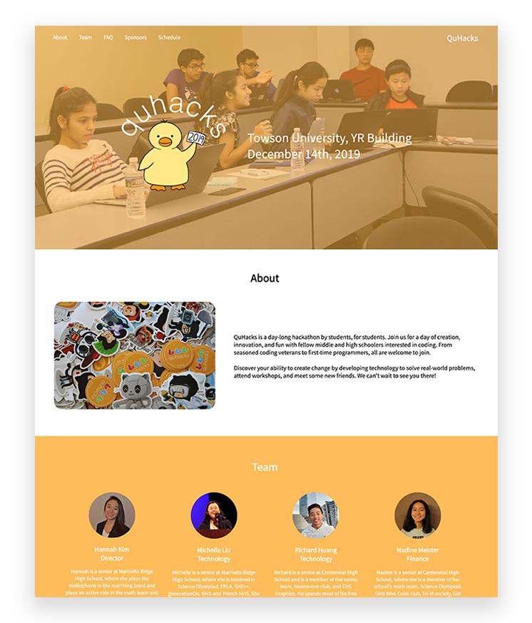
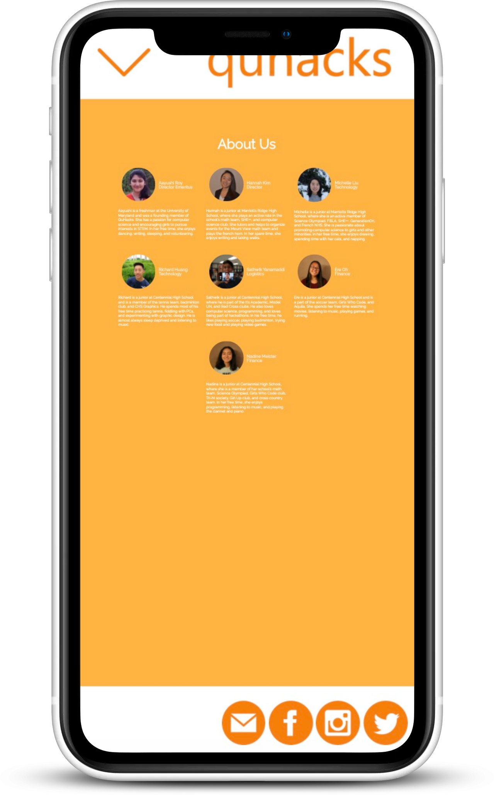
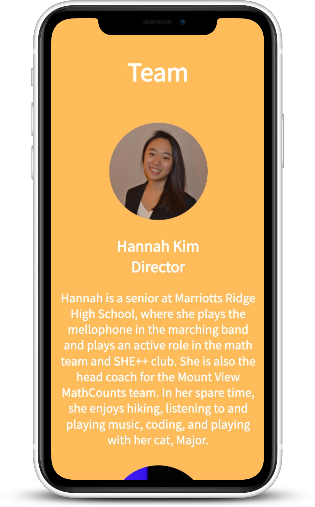

QuHacks
-
Hackathon by students, for students.
> Go to website -

-
QuHacks is a Maryland-based organization that hosts hackathons for middle to high school students with the goal of making coding more accessible to the youth. As the web developer and a member of the organizing team, I managed the design and development of the website. I also participated in the event-planning, including reaching out to corporate sponsors, coordinating event logistics, and running a Python workshop.
-
Layout Design
As the QuHacks website designer, I was responsible for rebranding the organization for its 2019 event. The older version of the website featured a multi-page layout with a dropdown menu. In order to create a more streamlined user experience, I made the layout single-paged and added an inline menu with anchors leading to the different page sections.
-

Before
After
-
Responsive Mobile Layout
In order to make the website better-suited for smaller devices such as phones, I implemented a dynamic layout to respond to different screen dimensions.
-

Before
After